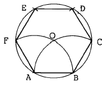
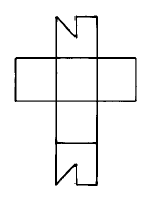
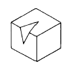
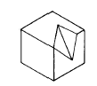
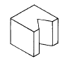
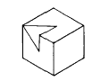
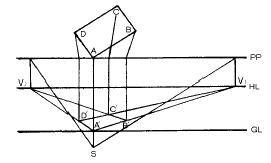
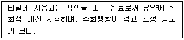

도자기공예기능사 (2004-07-18 기출문제)
1과목: 임의 구분
1. 평화, 안정, 신선, 생장 등의 추상적인 연상색은?
- 적색
- 황색
- 녹색
- 청색
(정답률: 98%)

2. 가장 가벼운 느낌을 주는 배색은?
- 귤색 – 노랑
- 연두 - 검정
- 빨강 – 파랑
- 청록 - 녹색
(정답률: 95%)
3. 도면에서 문자 크기의 기준은?
- 문자의 높이
- 문자의 넓이
- 문자의 굵기
- 문자의 대각선
(정답률: 90%)
4. 한 변을 알고 정6각형을 그리는 작도 중 순서상 제일 먼저 구해야 할 점은?

- F
- C
- O
- D
(정답률: 98%)
5. 형태의 변화조건에 해당되지 않는 것은?
- 명암에 따라 달라진다.
- 보는 방향에 따라 달라진다.
- 원근에 따라 달라진다.
- 눈의 높이에 따라 달라진다.
(정답률: 93%)
6. 수직선은 다음 보기 중 어떠한 느낌을 주는가?
- 안정감, 고요함
- 강직함, 고결함
- 불안정감, 운동감
- 우아하고 관능적느낌
(정답률: 96%)
7. 주택, 실내장식물, 기구, 집기 등과 같이 영구적 혹은 반영구적인 것에 적합한 조화는?
- 유사적 조화
- 대비적 조화
- 형상의 조화
- 대조의 조화
(정답률: 86%)
8. 서로 성질이 반대되는 것끼리 늘어놓아 강한 효과를 나타내었을 때 관계되는 것은?
- 변화
- 대비
- 주조
- 비례
(정답률: 96%)
9. 고려의 공예분야 중 두드러지게 성행하지 않았던 것은?
- 도자 공예
- 목죽 공예
- 금속 공예
- 칠 공예
(정답률: 83%)
10. 아르누보와 직접관계 없는 것은?
- 청춘양식
- 시세션
- 신예술양식
- 고딕양식
(정답률: 88%)
11. 빛에 의해서 물체가 백색으로 보이는 경우는?
- 일부 반사, 일부 흡수
- 모두 흡수
- 모두 반사
- 모두 통과
(정답률: 93%)
12. 색의 혼합 방법 중 두 개의 색을 나란히 놓아서 혼합효과를 보는 방법은?
- 색광혼합
- 회전혼합
- 감산혼합
- 병치혼합
(정답률: 94%)
13. 먼셀(Munsell)색채계의 기본 색상수는?
- 5
- 6
- 8
- 12
(정답률: 93%)
14. 색상환에서 서로 마주보이는 편에 있는 색끼리의 대비는?
- 연변대비
- 색상대비
- 명도대비
- 보색대비
(정답률: 91%)
15. 연필의 강도 즉, 진한정도는 모든 연필에 표시되어 있는데 H연필과 B연필의 차이를 옳게 설명한 것은?
- H는 수가 클수록 단단하고, B는 수가 클수록 무르고 진하다.
- H는 수가 클수록 무르며 진하고, B는 수가 클수록 단단하다.
- H는 수에 관계없이 진한 연필이고, B도 수에 관계없이 단단하고 흐리다.
- H나 B 모두 수가 표시되어 있으나 강도와는 무관한 것이다.
(정답률: 99%)
16. 형상 기호설명이 올바른 것은?
- □ : 정육면체 표시
- ø : 반지름 표시
- R : 지름표시
- t : 두께표시
(정답률: 84%)
17. 다음 설명 중 틀린 것은?
- 정12면체의 한 면은 정6각형이다.
- 정 8면체의 한 면은 정3각형이다.
- 정20면체의 한 면은 정3각형이다.
- 정 6면체의 한 면은 정4각형이다.
(정답률: 80%)
18. 그림과 같은 전개도의 입체도형은?





(정답률: 92%)
19. 리-디자인(Re-Design)의 개념은?
- 스케치를 완료하고 투시도 작성
- 제품의 디자인 개선
- 신제품 디자인 개발
- 판매를 위한 디자인 개발
(정답률: 96%)
20. 파랑색에 흰색을 혼합하였을 때 결과는 어떻게 되는가?
- 색상이 변한다.
- 명도는 낮아지고 색상은 변한다.
- 채도는 낮아지고 명도는 높아진다.
- 명도는 낮아진다.
(정답률: 85%)
2과목: 임의 구분
21. 색채조절을 하는 목적과 비교적 거리가 먼 것은?
- 일의 능률을 높이기 위함
- 심신의 피로를 막기 위함
- 사고나 재해를 감소시키기 위함
- 색의 아름다움을 보다 강조하기 위함
(정답률: 85%)
22. 다음 그림에서 PP와 GL은?

- 화면,기선
- 화선,시선
- 시선,기선
- 정점,시점
(정답률: 83%)
23. 다음 중 가소성 원료는?
- 규석
- 장석
- 점토
- 석회석
(정답률: 87%)
24. 다음 중 자기 소지의 특성이 아닌 것은?
- 흡수성이 거의 없다.
- 소성후 때리면 금속성을 낸다.
- 기계적 강도가 크다.
- 투광성이 없다.
(정답률: 88%)
25. 석기 점토의 용도는?
- 건축타일, 토관, 기와, 벽돌 등
- 토기, 도기, 석기, 자기 등
- 건축타일, 기와, 토기, 자기 등
- 토관, 벽돌, 도기, 자기 등
(정답률: 89%)
26. 벤토 나이트에 대한 설명중 틀리는 것은?
- 화산재의 유리성분이 분해해서 생성된 것이다.
- 매우 점력이 강한 점토이다.
- 대부분 수중에서 팽윤하지 않는다.
- 산성 백토라고도 한다.
(정답률: 81%)
27. 석고 주형시 해교제로서 점토에 가장 많이 사용하는 물질은?
- 규산 소오다
- 가성 소오다
- 황산 소오다
- 알민산 소오다
(정답률: 91%)
28. 단미로 소성하여 도자기를 만들 수 있는 원료는?
- 장석
- 백운석
- 도석
- 납석
(정답률: 77%)
29. 규석(실리카질원료)을 소지에 넣는 이유는?
- 가소성 원료로서 성형능력을 증가시킨다.
- 소지의 건조수축과 소성수축을 작게 한다.
- 알칼리성 원료로서 소성 온도를 저하시킨다.
- 중성 원료로서 소성에 안전성을 부여한다.
(정답률: 81%)
30. 활석(talc)의 성질 중 올바른 설명이 아닌 것은?
- 활석은 석필석 또는 석검석 이라고도 한다.
- 순수한 활석은 무색 또는 흰색이다.
- 활석은 연질이나 거칠은 촉감이다.
- 활석은 미세한 결정의 치밀한 결합체이다.
(정답률: 82%)
31. 자기의 주 원료가 아닌 것은?
- 규석
- 장석
- 점토
- 납석
(정답률: 76%)
32. 골회자기는 어느 나라에서 처음 만들었는가?
- 미국
- 한국
- 영국
- 독일
(정답률: 91%)
33. 도자기 윗그림 채색을 위한 소성 온도는 얼마 정도인가?
- 400℃ 정도
- 500℃ 정도
- 750℃ 정도
- 1,000℃ 정도
(정답률: 90%)
34. 제게르 코운을 세운 상태의 기울기는 몇도가 가장 알맞은가?
- 90°
- 80°
- 70°
- 40°
(정답률: 90%)
35. 좁은 공간에서도 설치 가능하고 온도조절이 쉬운 가마는?
- 나무가마
- 기름가마
- 석탄가마
- 전기가마
(정답률: 97%)
36. 내화물의 원료 중 화학적 성질이 염기성인 것은?
- 마그네시아
- 규석
- 샤모트질
- 납석
(정답률: 70%)
37. 도자기 공장에서 사용연료로 가스를 많이 쓰는 이유는?
- 열효율과 매연을 줄이고 열량조절이 용이하다.
- 고온의 열을 단번에 낼 수 있다.
- 사용자의 건강상 좋다.
- 매장량이 풍부하기 때문에 쓴다.
(정답률: 83%)
38. 다음 설명의 성질을 가진 도자기 원료는?

- 백운석
- 규회석
- 형석
- 견운모
(정답률: 71%)
39. 도자기용 유약의 종류를 처리방법에 따라 크게 세 가지로 분류한 것은 다음 중 어느 것인가?
- 청자유, 백자유, 색자유
- 도기유, 석기유, 자기유
- 생유, 프릿유, 특수유
- 장석유, 석회유, 납유
(정답률: 99%)
40. 부피의 5배에 해당하는 액체를 흡수할 수 있을 정도의 다공질로 단열재, 여과재 등으로도 사용되는 원료는?
- 규사
- 규조토
- 규석
- 규산나트륨
(정답률: 87%)
3과목: 임의 구분
41. 고려시대에 새로 나타난 기와 무늬로 주목할 만한 것은?
- 꽃무늬, 외눈박이 무늬
- 사자무늬, 꽃무늬
- 도깨비무늬, 외눈박이무늬
- 연부무늬, 꽃무늬
(정답률: 74%)
42. 다음 토기중 가장 오래된 것은?
- 뇌문 토기
- 즐문 토기
- 김해 토기
- 홍 도
(정답률: 76%)
43. 다음 중 분청사기 기법과 관계가 적은 것은?
- 박지기법
- 인화기법
- 청화기법
- 철화기법
(정답률: 74%)
44. 다음 중 포트 밀(pot mill)의 설명으로 맞지 않는 것은?
- 자기로된 구가 들어 있다.
- 적량의 물을 넣을 수 있다.
- 원료를 분쇄한다.
- 진공 포트 밀을 사용하면 효과적이다.
(정답률: 72%)
45. 점토소지를 사용할 시 기포없는 점토를 만드는데 필요한 기계는 무엇인가?
- 진공토련기
- 볼 밀
- 후렛트 밀
- 로구로
(정답률: 97%)
46. 가압 성형시에 사용하는 성형 윤활제로는 다음 중 어떤 것이 좋은가?
- 규산소오다
- 왁스
- 나무재
- 소분
(정답률: 82%)
47. 수동식과 자동식이 있으며 도자기 공업의 다량 생산의 체제에 따라 요즈음 증가 추세에 있는 성형 방법?
- 전기 물레 성형
- 전기 자동 물레 성형
- 슬립 주형 성형
- 발물레 성형
(정답률: 89%)
48. 점토줄을 말아 만드는 성형방법은?
- 쌓아 올리기
- 파내어 만들기
- 일으켜 만들기
- 기계물레 성형
(정답률: 99%)
49. 점토 코일링(coiling)을 다른 말로 표현한 것 중 알맞는 것은?
- 말아쌓기
- 두드려 올리기
- 눌러 찍어내기
- 말아 붙이기
(정답률: 95%)
50. 원형의 크기를 정하는 바른 방법은?
- 완성품의 크기와 모양이 정확하게 같아야 한다.
- 완성품의 크기보다 팽창율을 감안하여 작게 만든다.
- 완성품의 크기보다 수축율을 감안하여 크게 만든다.
- 완성품의 크기보다 키를 높게 만든다.
(정답률: 95%)
51. 기물에 투각을 할 때 기물이 어떤 상태일 때가 가장 좋은가?
- 초벌구이가 끝난 후에
- 완전 건조 후에
- 반 건조 후에
- 성형 직후
(정답률: 95%)
52. 도자기를 시유할 때 필요없는 도구는?
- 둥근 붓
- 밀대
- 분무기
- 손물레
(정답률: 96%)
53. 가스 가마의 크기를 나타내는 1루베는 가로, 세로, 높이가 각각 얼마인가?
- 1피트 × 1피트 × 1피트
- 10인치 × 10인치 × 10인치
- 1미터 × 1미터 × 1미터
- 3.3미터 × 3.3미터 × 3.3미터
(정답률: 86%)
54. 다음 중 직접적인 온도 측정방법이 아닌 것은?
- 광학 고온계(Optical Pyrometer)를 사용한다.
- 열전대 고온계(Electro Pyrometer)를 사용한다.
- 제겔콘의 사용
- 색견(色見)의 사용
(정답률: 92%)
55. 터널가마의 장점이 아닌 것은?
- 연료가 절약된다.
- 균일소성이 가능하다.
- 건설비가 싸다.
- 가마수명이 길고 보수비가 적게 든다.
(정답률: 88%)
56. 시유 방법들로만 된 것은?
- 담금법, 흘림법, 분무법
- 붓칠법, 건조법, 분말법
- 담금법, 상감법, 인장법
- 흘림법, 걸름법, 시문법
(정답률: 98%)
57. 규산염, 금속산화물을 섞어 만든 것으로 소성시 가마 안의 온도를 측정하는 삼각추 모양의 것은?
- 열전대 고온계
- 광고온계
- 복사온도계
- 제겔콘
(정답률: 96%)
58. 틀 제작시 기공이 없는 석고형을 만들기 위해서 사용하는 기계는?
- 진공석고 교반기
- 진공 컴퓨터 펌프
- 진공 토련기
- 진공트렌스
(정답률: 91%)
59. 도자기용 스탠드를 만들 때 사용되는 장식기법은?
- 양각하기
- 음각하기
- 부조하기
- 투각하기
(정답률: 91%)
60. 슬립을 만들 때 첨가되는 해교제에 관한 설명 중 맞는 것은?
- 물 속에서 알갱이를 분산시키는 역할을 한다.
- 점도를 높이는 역할을 한다.
- 응집시켜 침전을 촉진시키는 역할을 한다.
- 황산마그네슘, 염화칼슘 등이 있다.
(정답률: 85%)